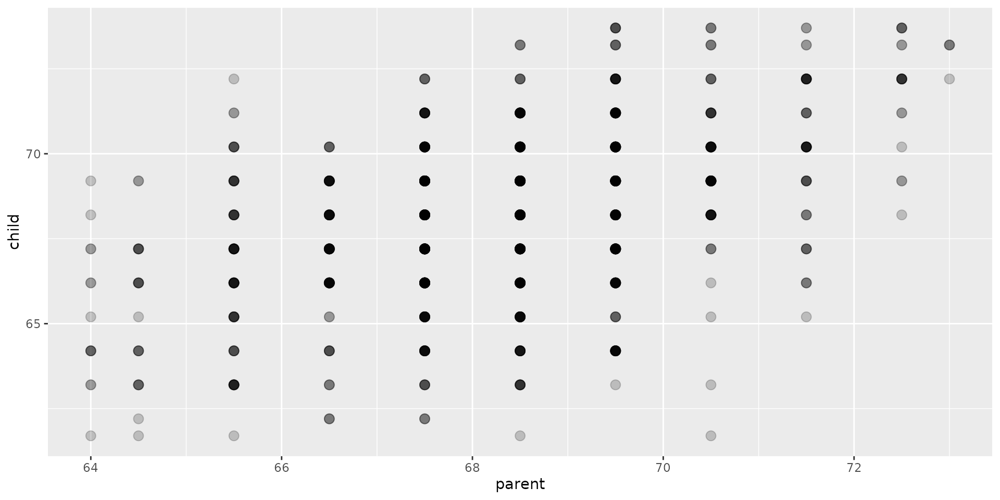
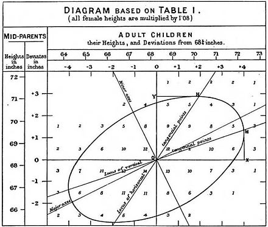
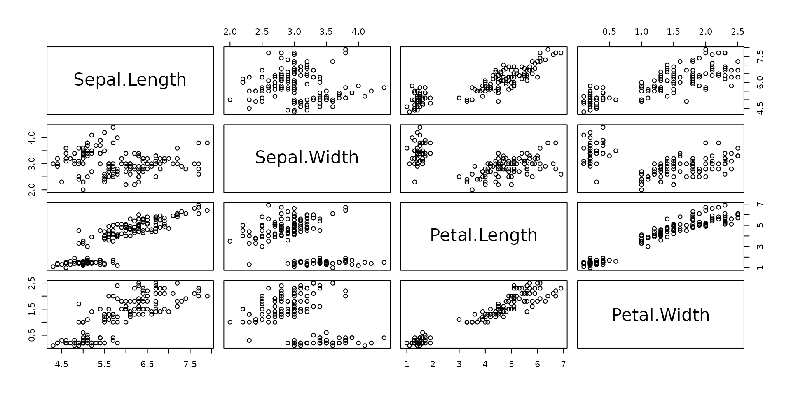
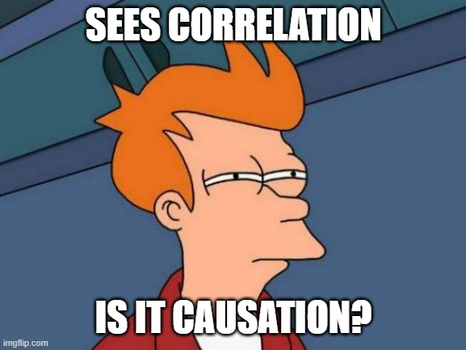
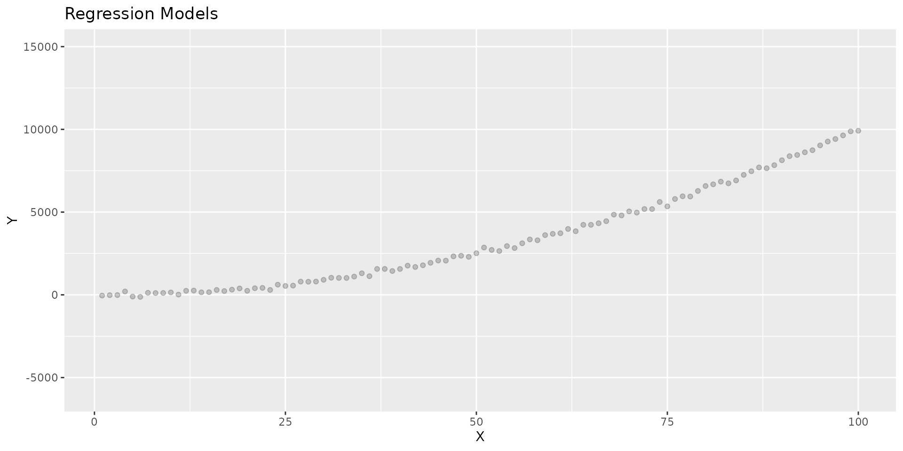
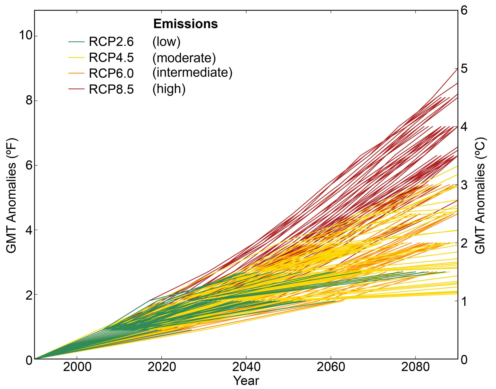
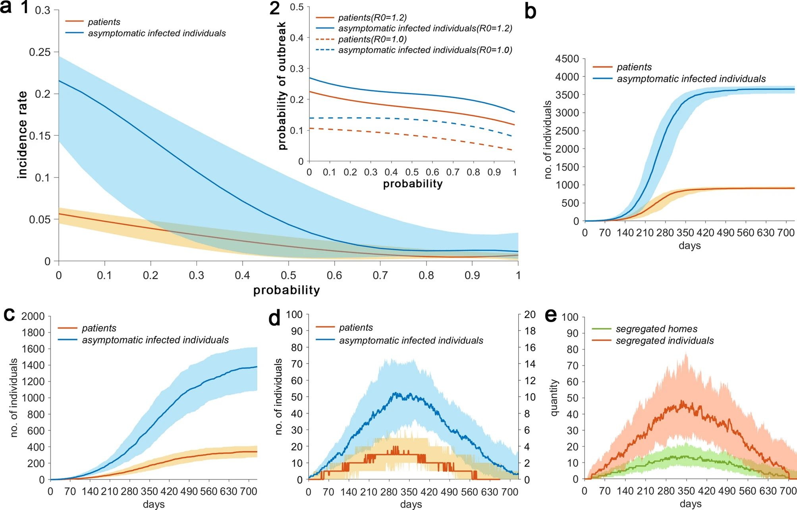
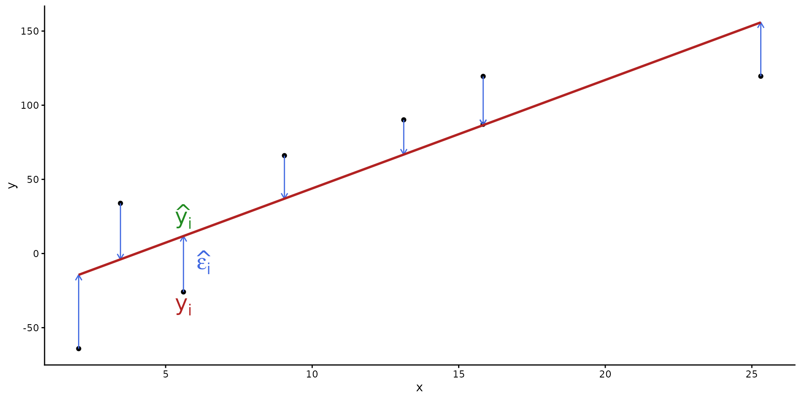
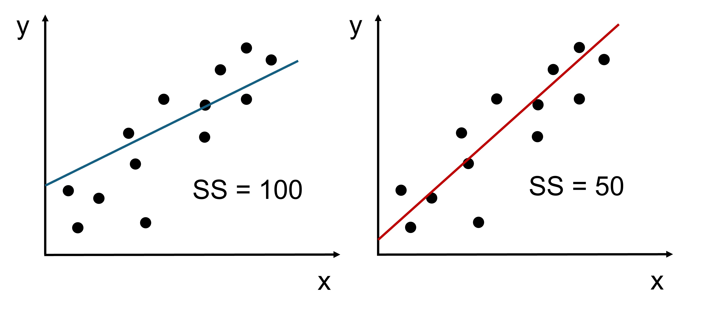

parent child
1 70.5 61.7
2 68.5 61.7
3 65.5 61.7
4 64.5 61.7
5 64.0 61.7
6 67.5 62.2Topic 9 – Describing relationships
ENVX1002 Statistics in Life and Environmental Sciences
Si Yang Han
The University of Sydney
Feb 2026
About me
- Research topics: spatial modelling and mapping, precision agriculture, winter grains
- Timeline at USYD
- BSc (Hons) in Agricultural Science
- PhD in Digital Agriculture
- Postdoc in Spatial Modelling
- Associate Lecturer in Agricultural Data Science
Learning Outcomes
LO1. Demonstrate proficiency in utilizing R and Excel to effectively explore and describe data sets in the life sciences.
LO2. Evaluate and interpret different types of data in the natural sciences by visualising probability distributions and calculating probabilities using RStudio and Excel.
LO3. Apply parametric and non-parametric statistical inference methods to experimental data using RStudio and effectively interpret and communicate the results in the context of the data.
LO4. Apply both linear and non-linear models to describe relationships between variables using RStudio and Excel, demonstrating creativity in developing models that effectively represent complex data patterns.
LO5. Articulate statistical and modelling results clearly and convincingly in both written reports and oral presentations, working effectively as an individual and collaboratively in a team, showcasing the ability to convey complex information to varied audiences.
Module overview
- Week 9. Describing Relationships
- Correlation (calculation, interpretation)
- Regression (model structure, model fitting
- What/when/why/how
- Week 10. Simple Linear Regression
- Can we use the model?(assumptions, hypothesis testing)
- How good is the model?(interpretation, model fit)
- Week 11. Multiple Linear Regression
- Multiple Linear Regression (MLR) modelling
- Assumptions, interpretation and the principle of parsimony
- Week 12. Nonlinear Regression
- Common nonlinear functions
- Transformations
Module overview
- Week 9. Describing Relationships
- Correlation (calculation, interpretation)
- Regression (model structure, model fitting
- What/when/why/how
Example - Galton’s Data
- 928 children of 205 pairs of parents
- Average height of both parents and child measured in inches
- Size classes were binned (hence data looks discrete)
Example - Galton’s Data
We can visually inspect the relationship between the two variables using a scatterplot:
… but this is not a very good way to assess the strength of the relationship between the two variables.
Is the relationship:
- Linear?
- Positive or negative?
- Weak, moderate or strong?
Correlation
Correlation
The correlation coefficient is a number between -1 and 1 that describes the relationship between two continuous variables.
- Direction:
- Positive – both variables increase together
- Negative – one variable increases as the other decreases
- Strength:
- -1 → perfect negative relationship
- 0 → no relationship
- 1 → perfect positive relationship
- Common terms: weak (~0.1–0.3), moderate (~0.4–0.6) or strong (~0.7–1.0) – useful but subjective!
Correlation
Pearson’s Correlation (r) Formula:
\[ r = \frac{\sum_{i=1}^n (x_i - \bar{x})(y_i - \bar{y})}{\sqrt{\sum_{i=1}^n (x_i - \bar{x})^2 \sum_{i=1}^n (y_i - \bar{y})^2}} \]
Covariance divided by the product of the standard deviations.
Karl Pearson developed the correlation coefficient in 1800s (based on the work by Francis Galton)

Pearson’s r is:
- The most commonly used correlation coefficient
- For normally distributed data only (parametric)
- For linear relationships only (i.e. a straight line)
Luckily we have Excel and R
- Excel:
=CORREL()formula, or use the Analysis Toolpak - R:
cor()function- By default this calculates Pearson’s correlation coefficient
- Can also calculate other types of correlation (
cor(x, y, method = "spearman"))
Code
# Generate synthetic data
set.seed(123)
rainfall <- rnorm(100, mean = 50, sd = 10)
plant_growth <- rainfall + rnorm(100, mean = 0, sd = 5)
# Calculate correlation coefficient
correlation_coef <- cor(rainfall, plant_growth)
# Plot data using ggplot2
library(ggplot2)
p1 <- ggplot(data = data.frame(rainfall, plant_growth), aes(x = rainfall, y = plant_growth)) +
geom_point() +
geom_smooth(method = "lm", se = FALSE) +
labs(
title = "Positive correlation",
x = "Rainfall", y = "Crop Yield",
subtitle = paste("Pearson's r: ", round(correlation_coef, 2))
)
# Generate synthetic data
set.seed(123)
insulin <- rnorm(100, mean = 50, sd = 10)
blood_glucose <- 100 - insulin + rnorm(100, mean = 0, sd = 5)
# Calculate correlation coefficient
correlation_coef <- cor(insulin, blood_glucose)
# Plot data using ggplot2
p2 <- ggplot(data = data.frame(insulin, blood_glucose), aes(x = insulin, y = blood_glucose)) +
geom_point() +
geom_smooth(method = "lm", se = FALSE) +
labs(
title = "Negative correlation",
x = "Insulin", y = "Blood Glucose",
subtitle = paste("Pearson's r: ", round(correlation_coef, 2))
)
library(patchwork)
# Set the seed for reproducibility
set.seed(1249)
# Generate the data
x <- rnorm(50, mean = 50, sd = 10)
y <- rnorm(50, mean = 100, sd = 20)
df1 <- data.frame(x, y) # combine the two variables into a dataframe
correlation_coef <- cor(x, y) # calculate the correlation coefficient
# Scatter plot
p3 <- ggplot(df1, aes(x, y)) +
geom_point() +
geom_smooth(method = "lm", se = FALSE) +
labs(
title = "Weak/no correlation",
x = "Shoe Size", y = "IQ",
subtitle = paste("Pearson's r: ", round(correlation_coef, 2))
)
p1 + p3 + p2(Note: not real data)
A weak or nonexistent relationship is one where the correlation coefficient is close to 0.
A moderate relationship falls closer to 0.5.
A strong relationship is one where the correlation coefficient is close to -1 or 1.
The exact values are subjective and vary between fields of study.
Example - Galton’s Data

Is the relationship:
- Linear? Seems to be
- Positive or negative? Positive
- Weak, moderate or strong? Moderate
In words: “There is a moderate positive linear relationship between the height of parents and the height of their children.”
Anscombe’s Quartet
A set of four datasets that are nearly identical in simple descriptive statistics but have very different distributions.
Code
library(tidyverse)
# Compute Pearson, Spearman, and Kendall correlations for each set
cor_values <- anscombe %>%
pivot_longer(everything(),
names_to = c(".value", "set"),
names_pattern = "(.)(.)") %>%
group_by(set) %>%
summarise(
pearson = cor(x, y, method = "pearson"))
# Create the plot with the correlation values added as text annotations
anscombe %>%
pivot_longer(everything(),
names_to = c(".value", "set"),
names_pattern = "(.)(.)") %>%
ggplot(aes(x = x, y = y)) +
geom_point(size = 4) +
facet_wrap(~set, ncol = 4) +
# Add text annotations for Pearson, Spearman, and Kendall correlations
geom_text(data = cor_values, aes(x = 8, y = 4, label =
paste("Pearson: ", round(pearson, 2))),
inherit.aes = FALSE, size = 3.5, color = "black", hjust = 0)Correlation coefficients are not reliable in inferring the ‘type’ of relationship between variables – we must visualise.
Datasaurus Dozen
All of these data have a correlation coefficient close to zero!
Monotonic vs linear relationships
- Monotonic: a relationship that is consistently increasing or decreasing
- Linear: a relationship that is increasing or decreasing at a constant rate i.e. a straight line
Pearson’s correlation is only for linear relationships.
Spearman’s rank and Kendall’s tau are correlation coefficients for all monotonic relationships.
- Works with non-parametric data
- More ‘conservative’ i.e. values can be smaller in magnitude, but more robust against outliers
Code
library(tidyverse)
set.seed(123)
x <- seq(0, 10, length.out = 100)
x_length <- length(x)
# Create the data for each relationship
y_straight <- 2 * x + 5
y_exponential <- exp(x)
y_log <- logb(x+1, base = 2)
y_sigmoid <- 1 / (1 + exp(-x))
y_quadratic <- -1 * (x - 5)^2 + 100
y_polynomial <- x^3 - 4 * x^2 + 3 * x + 2
# Function to scale y-values to a specific range [0, 100]
scale_to_range <- function(y_values, new_min = 0, new_max = 100) {
old_min <- min(y_values)
old_max <- max(y_values)
scaled_values <- (y_values - old_min) / (old_max - old_min) * (new_max - new_min) + new_min
return(scaled_values)
}
# Apply scaling to each relationship
y_straight_scaled <- scale_to_range(y_straight)
y_exponential_scaled <- scale_to_range(y_exponential)
y_log_scaled <- scale_to_range(y_log)
y_sigmoid_scaled <- scale_to_range(y_sigmoid)
y_quadratic_scaled <- scale_to_range(y_quadratic)
y_polynomial_scaled <- scale_to_range(y_polynomial)
# Combine the data into a tibble
data <- tibble(
x = rep(x, 6),
y = c(y_straight_scaled, y_exponential_scaled, y_log_scaled, y_sigmoid_scaled, y_quadratic_scaled, y_polynomial_scaled),
type = rep(c("Straight Line", "Exponential", "Log Curve", "Sigmoid Curve", "Quadratic Line", "Polynomial"), each = x_length)
)
# Calculate the correlation coefficients for each relationship type
cor_values <- data %>%
group_by(type) %>%
summarise(
pearson = cor(x, y, method = "pearson"),
spearman = cor(x, y, method = "spearman"),
kendall = cor(x, y, method = "kendall")
)
# Plot the data and add correlation coefficients
ggplot(data, aes(x = x, y = y)) +
geom_line() +
facet_wrap(~type, scales = 'free') +
geom_text(data = cor_values, aes(x = 3, y =25, label =
paste("Pearson: ", round(pearson, 2),
"\nSpearman: ", round(spearman, 2),
"\nKendall: ", round(kendall, 2))),
inherit.aes = FALSE, size = 4, color = "black", hjust = 0) +
theme_minimal()Example - iris Dataset

Example - iris Dataset
Which correlation coefficient do we use?
Example - iris Dataset
Sepal.Length Sepal.Width Petal.Length Petal.Width
Sepal.Length 1.00 -0.12 0.87 0.82
Sepal.Width -0.12 1.00 -0.43 -0.37
Petal.Length 0.87 -0.43 1.00 0.96
Petal.Width 0.82 -0.37 0.96 1.00Correlation analysis identifies variables that have a strong linear relationship quickly and easily.
- We want to predict the
Petal.Widthof an iris flower - Which variables would be good predictors?
- Either
Petal.LengthandSepal Lengthwould be good predictors
- Either
- Which variables are likely to present issues for model fitting?
- e.g.
Petal.LengthandSepal Lengthare strongly correlated - including both would cause multicollinearity – (L11 MLR)
- e.g.
Correlation \(\neq\) causation
Spurious correlations: a relationship between two variables does not imply that one causes the other.
What comes after correlation?
- We have data with two or more numerical variables
- We conduct correlation analysis to describe possible linear relationships
- Fast, easy, interpretable, and widely used
But, we can’t infer causation: - Is there reason() to expect a relationship between the two variables? - Do you have a hypothesis* about the relationship between the two variables?
If we have a hypothesis about the relationship between two variables, we can use regression analysis to test it.
Regression modelling
- Regression is a statistical method to fit a model to data
- In linear regression this is a straight line that best fits the data – i.e. line of best fit
Why regression?
Describe the relationship between two variables
What is the relationship between a response variable \(Y\) and a predictor variable \(x\)?
Common Terms: \(Y\) = response, independent variable, target, outcome etc. \(x\) = predictor, dependent variable, feature, input etc.
Explain the relationship between two variables
How much variation in \(Y\) can be explained by a relationship with \(x\)?
Predict the value of a response variable
What is the value of \(Y\) for a given value of \(x\)?
Often we can easily measure/obtain \(x\) but not \(Y\), so we need to predict \(Y\) from \(x\).
A gateway to the world of modelling
Many types of regression models exist:
- Simple linear regression (one predictor i.e. \(x\))
- Multiple linear regression (more than one predictor)
- Non-linear regression, using functions such as polynomials, exponentials, logarithms, etc.
Asking ChatGPT for help with the next slide:
Using R code, can you generate some data that is useful to demonstrate simple linear regression, multiple linear regression, polynomial, exponential and logarithmic regressions in ggplot2?
Sure! Here’s an example code that generates a sample dataset and visualizes it using ggplot2 library in R.
Visualising regression models
Visualising regression models
Code
library(ggplot2)
# Generate sample data
set.seed(136)
x <- 1:100
y <- x^2 + rnorm(100, sd = 100)
# Define regression functions
slr <- function(x, y) {
mod <- lm(y ~ x)
return(list(
data.frame(x = x, y = predict(mod), model_type = "Simple Linear Regression"),
paste("y =", round(coefficients(mod)[[2]], 2), "x +", round(coefficients(mod)[[1]], 2))
))
}
mlr <- function(x, y, z) {
mod <- lm(y ~ x + z)
return(list(
data.frame(x = x, z = z, y = predict(mod), model_type = "Multiple Linear Regression"),
paste("y =", round(coefficients(mod)[[3]], 2), "x +", round(coefficients(mod)[[2]], 2), "z +", round(coefficients(mod)[[1]], 2))
))
}
poly_reg <- function(x, y, degree) {
mod <- lm(y ~ poly(x, degree, raw = TRUE))
x_new <- seq(min(x), max(x), length.out = 100)
y_new <- predict(mod, newdata = data.frame(x = x_new))
return(list(
data.frame(x = x_new, y = y_new, model_type = paste("Polynomial Regression (", degree, ")", sep = "")),
paste(paste("x^", degree, sep = ""), ":", paste(round(coefficients(mod), 2), collapse = " + "))
))
}
exp_reg <- function(x, y) {
mod <- lm(log(y) ~ x)
x_new <- seq(min(x), max(x), length.out = 100)
y_new <- exp(predict(mod, newdata = data.frame(x = x_new)))
return(list(
data.frame(x = x_new, y = y_new, model_type = "Exponential Regression"),
paste("y =", round(exp(coefficients(mod)[[2]]), 2), "* e^(", round(coefficients(mod)[[1]], 2), "x", ")")
))
}
log_reg <- function(x, y) {
mod <- lm(y ~ log(x))
x_new <- seq(min(x), max(x), length.out = 100)
y_new <- predict(mod, newdata = data.frame(x = x_new))
return(list(
data.frame(x = x_new, y = y_new, model_type = "Logarithmic Regression"),
paste("y =", round(coefficients(mod)[[2]], 2), "* log(x) +", round(coefficients(mod)[[1]], 2))
))
}
# Create regression line dataframes and equations
reg_data <- list(slr(x, y), mlr(x, y, rnorm(100, sd = 10)), poly_reg(x, y, 3), exp_reg(x, y), log_reg(x, y))
reg_eqs <- sapply(reg_data, function(x) x[[2]])
# Plot the data and regression lines
ggplot(data.frame(x = x, y = y), aes(x, y)) +
lapply(seq_along(reg_data), function(i) geom_line(data = reg_data[[i]][[1]], aes(x, y, color = reg_data[[i]][[1]]$model_type), linewidth = 1.4)) +
ggtitle("Regression Models") +
geom_point(alpha = .2) +
xlab("X") +
ylab("Y") +
scale_color_discrete(name = "Model Type") + # This line adds the title to the legend
ylim(-6000, 15000) +
theme(legend.position = "right") # Modify this to display the legend (default position is 'right')Example: climate change modelling
Example: COVID-19 transmission modelling
Source: https://www.nature.com/articles/s41598-021-84893-4/figures/1
How does regression work?


Adrien-Marie Legendre, Carl Friedrich Gauss, Francis Galton
Note
Many other people contributed to the development of regression analysis, but these three are the most well-known.
How does regression work?
- Method of least squares first theorised by Adrien-Marie Legendre in 1805
- Technique of least squares first used by Carl Friedrich Gauss in 1809 (to fit a parabola to the orbit of the asteroid Ceres)
- Model fitting first published by Francis Galton in 1886 (predicting the height of a child from the height of the parents)
Least squares
When we fit a line, there is error between the observed and predicted values.
\[ \color{firebrick}{\hat{\epsilon_i}} = \color{royalblue}{y_i} - \color{forestgreen}{\hat{y_i}} \] The method of least squares fits a line of best fit by minimising the sum of the squared errors.
\[\color{firebrick} \sum_{i=1}^n ({\hat{\epsilon_i}})^2\]
Code
# simulate example data
set.seed(340)
x <- runif(8, 0, 30)
y <- 5 * x + rnorm(8, 0, 40)
df <- data.frame(x, y)
# fit linear model, add residual vertical lines as arrows
mod <- lm(y ~ x, data = df)
p1 <- ggplot(df, aes(x, y)) +
geom_point() +
geom_segment(aes(xend = x, yend = fitted(mod)),
arrow = arrow(length = unit(0.2, "cm")),
color = "royalblue"
) +
labs(x = "x", y = "y")
p1 +
geom_smooth(method = "lm", se = FALSE, color = "firebrick") +
annotate("text",
x = 6.3, y = -6, size = 7,
label = expression(hat(epsilon[i])), colour = "royalblue"
) +
annotate("text",
x = 5.6, y = 25, size = 7,
label = expression(hat(y[i])), colour = "forestgreen"
) +
annotate("text",
x = 5.6, y = -36, size = 7,
label = expression(y[i]), colour = "firebrick"
) +
theme_classic()
Note
The error is squared so positive and negative errors do not cancel each other out.
Least squares
 Which line fits the data better?
How does a computer fit a line of best fit?

The line is fitted again and again until the squared error stabilises. A computer can do this very quickly!
Simple linear regression
The goal is to fit the line of best fit between a numerical response and a numerical predictor.
Simple linear regression model
We want to relate the response \(Y\) to a predictor \(x\) for \(i\) number of observations:
\[Y_i = \color{royalblue}{\beta_0 + \beta_1 x_i} +\color{red}{\epsilon_i}\]
where
\[\epsilon_i \sim N(0, \sigma^2)\]
- \(Y_i\), the response, is an observed value of the dependent variable.
- \(\beta_0\), the constant, is the y-intercept and is fixed.
- \(\beta_1\) is the population slope parameter, and like \(\beta_0\), is also fixed.
- \(\epsilon_i\) is the error associated with predictions of \(y_i\), and unlike \(\beta_0\) or \(\beta_1\), it is not fixed.
Note
\(\epsilon_i\) is generally associated with the residual (\(observed - predicted\)). True error occurs during data collection (e.g. faulty instruments, selection bias, etc.) and often immeasurable.
Different wordings
Different ways to think about the response:
- Response = Prediction + Error
- Response = Signal + Noise
- Response = Model + Unexplained
- Response = Deterministic + Random
- Response = Explainable + Everything else
- Y = f(x)
- Dependent variable = f(Independent variable)
Model fitting
Two approaches; analytical and numerical:
- Analytical: equation(s) used directly to find solution
- Numerical: computer uses “random guesses” to find set of parameters to that minimises objective function, in this case residual sum of squares
Analytical: Slope, \(\beta_1\)
\[ \beta_1 = \frac{\sum_{i=1}^n (x_i - \bar{x})(y_i - \bar{y})}{\sum_{i=1}^n (x_i - \bar{x})^2} = \frac{Cov(x,y)}{Var(x)} = \frac{SS_{xy}}{SS_{xx}} \]
Code
# Calculate slope from df
beta1 <- sum((df$x - mean(df$x)) * (df$y - mean(df$y))) /
sum((df$x - mean(df$x))^2)
# beta0 <- mean(df$y) - beta1 * mean(df$x)
p1 +
geom_smooth(method = "lm", se = FALSE, color = "firebrick", linetype = 2) +
# label the line
annotate("text",
x = 15, y = 65, size = 7,
label = expression(beta[1]), colour = "firebrick"
) +
theme_classic()Analytical: Intercept
\[ \beta_0 = \bar{y} - \beta_1 \bar{x} \]
Code
# calculate mean y from df
ybar <- mean(df$y)
xbar <- mean(df$x)
beta0 <- ybar - beta1 * xbar
p1 + geom_vline(xintercept = xbar, linetype = "dashed", color = "slateblue") +
geom_hline(yintercept = ybar, linetype = "dashed", color = "slateblue") +
# label the lines
annotate("text",
x = 25, y = ybar * 0.8, size = 7,
label = expression(bar(y)), colour = "slateblue"
) +
annotate("text",
x = xbar * 1.05, y = 150, size = 7,
label = expression(bar(x)), colour = "slateblue"
) +
geom_smooth(method = "lm", se = FALSE, color = "firebrick", linetype = 2) +
# extend the geom_smooth line to intercept x=0
geom_segment(aes(x = xbar, y = ybar, xend = 0, yend = beta0),
color = "firebrick", linetype = 2
) +
# label the slope line
annotate("text",
x = 15, y = 65, size = 7,
label = expression(beta[1]), colour = "firebrick"
) +
# add a dot at the intercept
geom_point(aes(x = 0, y = beta0), color = "seagreen", size = 3) +
# label the intercept
annotate("text",
x = 0, y = beta0 * 1.4, size = 7,
label = expression(beta[0]), colour = "seagreen"
) +
theme_classic()Example: back to Galton’s data
What can we understand about the relationship between child height and parent height?
Let’s do this in R - much easier
Linearity check
Recap - there appears to be a linear relationship between child height and parent height (plot). This is a moderately positive relationship (correlation).
[1] 0.4587624
Hypothesis testing
- The null hypothesis for a linear model: \(H_0: \beta_1=0\)
- If there is no slope (\(\beta_1=0\)) then \(y = \beta_0\) (the mean)
- i.e. is the mean (\(\bar{y}\)) a better fit than a linear model?
- The alternative hypothesis for a linear model: \(H_0: \beta_1 \neq 0\)
- i.e. the estimate from the linear model (\(\hat{y}\)) fits the data better than the mean (\(\bar{y}\))
Code
null_model <- Galton %>%
lm(child ~ 1, data = .) %>%
broom::augment(Galton)
lin_model <- Galton %>%
lm(child ~ parent, data = .) %>%
broom::augment(Galton)
models <- bind_rows(null_model, lin_model) %>%
mutate(model = rep(c("Null Model", "SLR model"), each = nrow(Galton)))
ggplot(data = models, aes(x = parent, y = child)) +
geom_smooth(
data = filter(models, model == "Null Model"),
method = "lm", se = FALSE, formula = y ~ 1, size = 0.5
) +
geom_smooth(
data = filter(models, model == "SLR Model"),
method = "lm", se = FALSE, formula = y ~ x, size = 0.5
) +
geom_segment(
aes(xend = parent, yend = .fitted),
arrow = arrow(length = unit(0.1, "cm")),
size = 0.3, color = "darkgray"
) +
geom_point(alpha = .2) +
facet_wrap(~model) +
xlab("Parent height (in)") +
ylab("Child height (in)")Simple linear regression
We fit the model in one simple line of code: fit <- lm(child ~ parent, data = Galton)
And then we can use summary() to get a summary of the model:
Call:
lm(formula = child ~ parent, data = Galton)
Residuals:
Min 1Q Median 3Q Max
-7.8050 -1.3661 0.0487 1.6339 5.9264
Coefficients:
Estimate Std. Error t value Pr(>|t|)
(Intercept) 23.94153 2.81088 8.517 <2e-16 ***
parent 0.64629 0.04114 15.711 <2e-16 ***
---
Signif. codes: 0 '***' 0.001 '**' 0.01 '*' 0.05 '.' 0.1 ' ' 1
Residual standard error: 2.239 on 926 degrees of freedom
Multiple R-squared: 0.2105, Adjusted R-squared: 0.2096
F-statistic: 246.8 on 1 and 926 DF, p-value: < 2.2e-16Summary
Correlation is a measure of the relationship between two numerical variables between -1 and 1.
- A correlation coefficient measures the strength and direction of the relationship.
- Pearson’s correlation is for linear relationships, Spearman’s/Kendall’s correlation is for monotonic relationships.
- Correlation \(\neq\) causation.
Regression is an analysis that models the relationship between a dependent variable and independent variable(s).
- The most common method for regression is least squares, which minimises the sum of the squared residuals.
- Simple linear regression fits a straight line between two variables.
Next week: interpreting results and assumptions for simple linear regression.
Thanks!
This presentation is based on the SOLES Quarto reveal.js template and is licensed under a Creative Commons Attribution 4.0 International License.